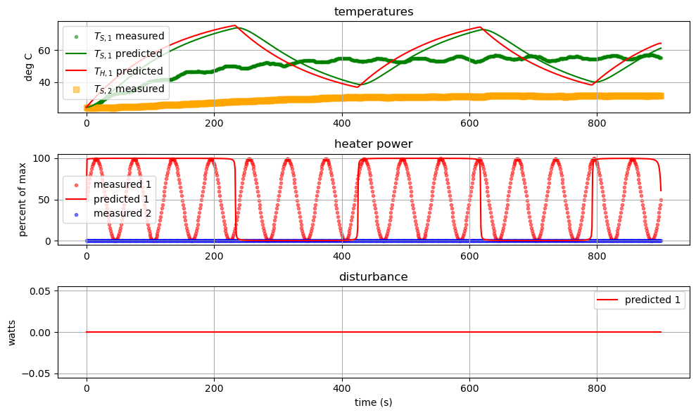
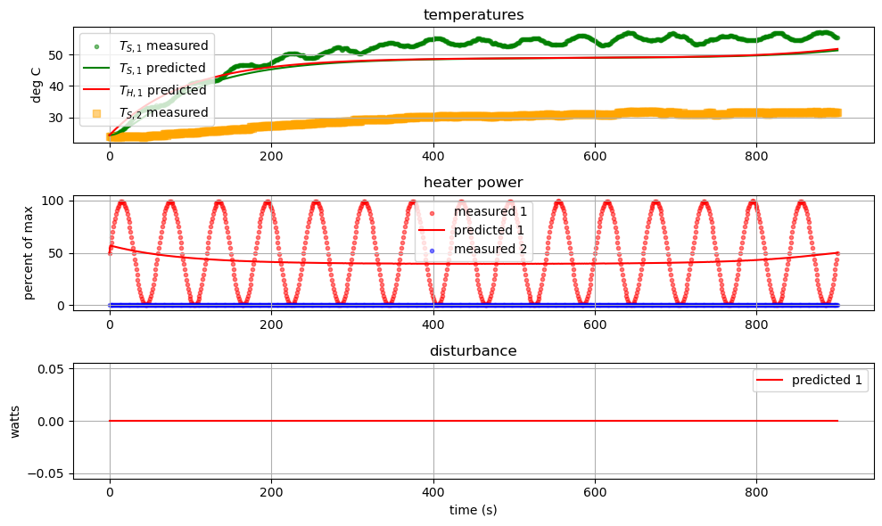

Pyomo.DoE: Optimization#
import sys
# If running on Google Colab, install Pyomo and Ipopt via IDAES
on_colab = "google.colab" in sys.modules
if on_colab:
!wget "https://raw.githubusercontent.com/dowlinglab/pyomo-doe/main/notebooks/tclab_pyomo.py"
# import TCLab model, simulation, and data analysis functions
from tclab_pyomo import TCLabExperiment, create_model, extract_results, extract_plot_results, results_summary
# set default number of states in the TCLab model
number_tclab_states = 2
Load experimental data (sine test)#
import pandas as pd
if on_colab:
file = "https://raw.githubusercontent.com/dowlinglab/pyomo-doe/main/data/tclab_sine_test.csv"
else:
file = '../data/tclab_sine_test.csv'
df = pd.read_csv(file)
df.head()
| Time | T1 | T2 | Q1 | Q2 | |
|---|---|---|---|---|---|
| 0 | 0.00 | 24.45 | 24.13 | 50.0 | 0.0 |
| 1 | 1.00 | 24.45 | 24.13 | 55.0 | 0.0 |
| 2 | 2.01 | 24.45 | 24.13 | 60.0 | 0.0 |
| 3 | 3.01 | 24.45 | 24.13 | 65.0 | 0.0 |
| 4 | 4.01 | 24.77 | 23.81 | 70.0 | 0.0 |
ax = df.plot(x='Time', y=['T1', 'T2'], xlabel='Time (s)', ylabel='Temperature (°C)')

ax = df.plot(x='Time', y=['Q1', 'Q2'], xlabel='Time (s)', ylabel='Heater Power (%)')

tc_data = TCLabExperiment(name="Sine Wave Test for Heater 1",
time=df['Time'].values,
T1=df['T1'].values,
u1=df['Q1'].values,
P1=200,
TS1_data=None,
d1 = None,
T2=df['T2'].values,
u2=df['Q2'].values,
P2=200,
TS2_data=None,
d2 = None,
Tamb=df['T1'].values[0])
Caculate FIM at initial point (sine test)#
# Load Pyomo.DoE functions
from pyomo.contrib.doe import (
ModelOptionLib,
DesignOfExperiments,
MeasurementVariables,
DesignVariables,
)
from pyomo.environ import SolverFactory
# Copied from previous notebook
theta_values = {'Ua': 0.05147278733764012, 'Ub': 0.0005342082856927798, 'inv_CpH': 0.14622879403418604, 'inv_CpS': 99.99999754623846}
# Get time points for control decisions
t_control = tc_data.time
measurements = MeasurementVariables()
measurements.add_variables('Ts1',
indices={0: t_control},
time_index_position = 0)
decisions = DesignVariables()
decisions.add_variables('U1',
indices={0: t_control},
time_index_position = 0,
lower_bounds=0,
upper_bounds=100,
values=tc_data.u1)
def create_model_doe(mod=None, model_option="stage2", theta=theta_values):
return create_model(m=mod, model_option=model_option, data=tc_data, mode='doe', theta=theta, integrate_to_initialize=True, number_of_states=number_tclab_states)
# Create doe_object using DesignOfExperiments
doe_object1 = DesignOfExperiments(
theta_values, # dictionary of parameters
decisions, # design variable
measurements, # measurement variable
create_model_doe, # model
solver=SolverFactory('ipopt')
)
result = doe_object1.compute_FIM(
mode='sequential_finite',
formula = 'central'
)
result.result_analysis()
Ipopt 3.13.2:
******************************************************************************
This program contains Ipopt, a library for large-scale nonlinear optimization.
Ipopt is released as open source code under the Eclipse Public License (EPL).
For more information visit http://projects.coin-or.org/Ipopt
This version of Ipopt was compiled from source code available at
https://github.com/IDAES/Ipopt as part of the Institute for the Design of
Advanced Energy Systems Process Systems Engineering Framework (IDAES PSE
Framework) Copyright (c) 2018-2019. See https://github.com/IDAES/idaes-pse.
This version of Ipopt was compiled using HSL, a collection of Fortran codes
for large-scale scientific computation. All technical papers, sales and
publicity material resulting from use of the HSL codes within IPOPT must
contain the following acknowledgement:
HSL, a collection of Fortran codes for large-scale scientific
computation. See http://www.hsl.rl.ac.uk.
******************************************************************************
This is Ipopt version 3.13.2, running with linear solver ma27.
Number of nonzeros in equality constraint Jacobian...: 111616
Number of nonzeros in inequality constraint Jacobian.: 0
Number of nonzeros in Lagrangian Hessian.............: 0
Total number of variables............................: 39626
variables with only lower bounds: 0
variables with lower and upper bounds: 23408
variables with only upper bounds: 0
Total number of equality constraints.................: 39626
Total number of inequality constraints...............: 0
inequality constraints with only lower bounds: 0
inequality constraints with lower and upper bounds: 0
inequality constraints with only upper bounds: 0
iter objective inf_pr inf_du lg(mu) ||d|| lg(rg) alpha_du alpha_pr ls
0 0.0000000e+00 1.00e+00 0.00e+00 -1.0 0.00e+00 - 0.00e+00 0.00e+00 0
1 0.0000000e+00 1.00e-02 1.12e-01 -1.0 1.00e+00 - 9.80e-01 9.90e-01h 1
2 0.0000000e+00 9.90e-05 9.90e+00 -1.0 1.00e-02 - 1.00e+00 9.90e-01h 1
3 0.0000000e+00 1.53e-14 1.26e-05 -1.0 9.90e-05 - 1.00e+00 1.00e+00h 1
Number of Iterations....: 3
(scaled) (unscaled)
Objective...............: 0.0000000000000000e+00 0.0000000000000000e+00
Dual infeasibility......: 0.0000000000000000e+00 0.0000000000000000e+00
Constraint violation....: 1.5279139797464566e-14 1.5279139797464566e-14
Complementarity.........: 0.0000000000000000e+00 0.0000000000000000e+00
Overall NLP error.......: 1.5279139797464566e-14 1.5279139797464566e-14
Number of objective function evaluations = 4
Number of objective gradient evaluations = 4
Number of equality constraint evaluations = 4
Number of inequality constraint evaluations = 0
Number of equality constraint Jacobian evaluations = 4
Number of inequality constraint Jacobian evaluations = 0
Number of Lagrangian Hessian evaluations = 3
Total CPU secs in IPOPT (w/o function evaluations) = 0.121
Total CPU secs in NLP function evaluations = 0.002
EXIT: Optimal Solution Found.
INFO: elapsed time: 3.9 seconds
results_summary(result)
======Results Summary======
Four design criteria log10() value:
A-optimality: 9.698903678283168
D-optimality: 8.292425086814568
E-optimality: -15.256790847776848
Modified E-optimality: 24.939667881782306
FIM:
[[ 1.88459415e+08 -1.91393890e+08 -8.24201918e+06 -1.04121590e+03]
[-1.91393890e+08 4.80931030e+09 6.51658566e+07 2.58102008e+04]
[-8.24201918e+06 6.51658566e+07 1.46673544e+06 3.51179540e+02]
[-1.04121590e+03 2.58102008e+04 3.51179540e+02 1.38519624e-01]]
eigenvalues:
[4.81811358e+09 1.80716021e+08 4.06846518e+05 5.53616662e-16]
eigenvectors:
[[ 4.13259139e-02 -9.98655750e-01 3.12867703e-02 -1.00385955e-13]
[-9.99053330e-01 -4.17276557e-02 -1.22982147e-02 -5.33299017e-06]
[-1.35872064e-02 3.07489171e-02 9.99434786e-01 -2.48897568e-06]
[-5.36175981e-06 -1.45999971e-07 2.42198262e-06 1.00000000e+00]]
Optimize next experiment (D-optimality)#
# Extract the prior FIM and Jacobian information from the previous
# result to use for initialization.
prior = result.FIM.copy()
jac_for_initialization = result.jaco_information.copy()
# Set Ipopt options
solver = SolverFactory('ipopt')
solver.options['bound_push'] = 1E-10
solver.options['halt_on_ampl_error'] = 'yes'
solver.options['tol'] = 1E-5
solver.options['acceptable_tol'] = 1E-4
solver.options['max_iter'] = 500
solver.options['linear_solver'] = 'ma57'
# Create a new DoE object
doe_object2 = DesignOfExperiments(
theta_values, # dictionary of parameters
decisions, # design variable
measurements, # measurement variable
create_model_doe, # model
solver=solver,
prior_FIM=prior # use previous experiment as prior
)
# Solve the DoE problem
square_result2, optimize_result2 = doe_object2.stochastic_program(
if_optimize=True, # optimize
if_Cholesky=True, # use Cholesky decomposition
scale_nominal_param_value=True, # scale model parameter value
objective_option="det", # objective option (need to debug/improve initialization)
jac_initial=jac_for_initialization, # initialize Jacobian with prior solution
step = 0.01 # step size
)
Ipopt 3.13.2: bound_push=1e-10
halt_on_ampl_error=yes
tol=1e-05
acceptable_tol=0.0001
max_iter=500
linear_solver=ma57
******************************************************************************
This program contains Ipopt, a library for large-scale nonlinear optimization.
Ipopt is released as open source code under the Eclipse Public License (EPL).
For more information visit http://projects.coin-or.org/Ipopt
This version of Ipopt was compiled from source code available at
https://github.com/IDAES/Ipopt as part of the Institute for the Design of
Advanced Energy Systems Process Systems Engineering Framework (IDAES PSE
Framework) Copyright (c) 2018-2019. See https://github.com/IDAES/idaes-pse.
This version of Ipopt was compiled using HSL, a collection of Fortran codes
for large-scale scientific computation. All technical papers, sales and
publicity material resulting from use of the HSL codes within IPOPT must
contain the following acknowledgement:
HSL, a collection of Fortran codes for large-scale scientific
computation. See http://www.hsl.rl.ac.uk.
******************************************************************************
This is Ipopt version 3.13.2, running with linear solver ma57.
Number of nonzeros in equality constraint Jacobian...: 147664
Number of nonzeros in inequality constraint Jacobian.: 0
Number of nonzeros in Lagrangian Hessian.............: 9010
Total number of variables............................: 43246
variables with only lower bounds: 0
variables with lower and upper bounds: 23408
variables with only upper bounds: 0
Total number of equality constraints.................: 43246
Total number of inequality constraints...............: 0
inequality constraints with only lower bounds: 0
inequality constraints with lower and upper bounds: 0
inequality constraints with only upper bounds: 0
iter objective inf_pr inf_du lg(mu) ||d|| lg(rg) alpha_du alpha_pr ls
0 0.0000000e+00 9.62e+09 0.00e+00 -1.0 0.00e+00 - 0.00e+00 0.00e+00 0
Reallocating memory for MA57: lfact (1915769)
1 0.0000000e+00 4.80e+09 2.04e+05 -1.0 1.94e+07 - 9.80e-01 1.00e+00h 1
2 0.0000000e+00 2.96e-03 1.82e-05 -1.0 4.80e+09 - 1.00e+00 1.00e+00h 1
3 0.0000000e+00 4.96e-05 2.69e-09 -3.8 9.85e-01 - 1.00e+00 1.00e+00h 1
Number of Iterations....: 3
(scaled) (unscaled)
Objective...............: 0.0000000000000000e+00 0.0000000000000000e+00
Dual infeasibility......: 0.0000000000000000e+00 0.0000000000000000e+00
Constraint violation....: 3.8525709143595667e-07 4.9591064453125000e-05
Complementarity.........: 0.0000000000000000e+00 0.0000000000000000e+00
Overall NLP error.......: 3.8525709143595667e-07 4.9591064453125000e-05
Number of objective function evaluations = 4
Number of objective gradient evaluations = 4
Number of equality constraint evaluations = 4
Number of inequality constraint evaluations = 0
Number of equality constraint Jacobian evaluations = 4
Number of inequality constraint Jacobian evaluations = 0
Number of Lagrangian Hessian evaluations = 3
Total CPU secs in IPOPT (w/o function evaluations) = 0.746
Total CPU secs in NLP function evaluations = 0.007
EXIT: Optimal Solution Found.
Ipopt 3.13.2: bound_push=1e-10
halt_on_ampl_error=yes
tol=1e-05
acceptable_tol=0.0001
max_iter=500
linear_solver=ma57
******************************************************************************
This program contains Ipopt, a library for large-scale nonlinear optimization.
Ipopt is released as open source code under the Eclipse Public License (EPL).
For more information visit http://projects.coin-or.org/Ipopt
This version of Ipopt was compiled from source code available at
https://github.com/IDAES/Ipopt as part of the Institute for the Design of
Advanced Energy Systems Process Systems Engineering Framework (IDAES PSE
Framework) Copyright (c) 2018-2019. See https://github.com/IDAES/idaes-pse.
This version of Ipopt was compiled using HSL, a collection of Fortran codes
for large-scale scientific computation. All technical papers, sales and
publicity material resulting from use of the HSL codes within IPOPT must
contain the following acknowledgement:
HSL, a collection of Fortran codes for large-scale scientific
computation. See http://www.hsl.rl.ac.uk.
******************************************************************************
This is Ipopt version 3.13.2, running with linear solver ma57.
Number of nonzeros in equality constraint Jacobian...: 155813
Number of nonzeros in inequality constraint Jacobian.: 0
Number of nonzeros in Lagrangian Hessian.............: 9030
Reallocating memory for MA57: lfact (2554432)
Total number of variables............................: 44157
variables with only lower bounds: 4
variables with lower and upper bounds: 24309
variables with only upper bounds: 0
Total number of equality constraints.................: 43256
Total number of inequality constraints...............: 0
inequality constraints with only lower bounds: 0
inequality constraints with lower and upper bounds: 0
inequality constraints with only upper bounds: 0
iter objective inf_pr inf_du lg(mu) ||d|| lg(rg) alpha_du alpha_pr ls
0 -6.1485241e+01 4.96e-05 1.02e-03 -1.0 0.00e+00 - 0.00e+00 0.00e+00 0
Reallocating memory for MA57: lfact (2731181)
1 -6.1483998e+01 3.16e-02 1.00e-02 -1.0 2.49e+02 - 9.90e-01 1.00e+00f 1
2 -6.1373349e+01 3.27e+02 5.42e-04 -1.0 2.53e+04 - 9.90e-01 1.00e+00f 1
3 -6.0924989e+01 4.86e+01 7.25e-03 -1.0 1.88e+05 - 1.00e+00 1.00e+00F 1
4 -6.1012433e+01 1.29e+03 7.95e-05 -1.0 3.78e+04 - 1.00e+00 1.00e+00f 1
5 -6.1015631e+01 1.17e+00 1.32e-06 -1.0 2.37e+03 - 1.00e+00 1.00e+00h 1
6 -6.1015694e+01 1.35e-03 1.00e-06 -1.0 3.89e+01 - 1.00e+00 1.00e+00h 1
7 -6.1022771e+01 6.82e-01 1.40e-05 -2.5 6.42e+02 - 1.00e+00 1.00e+00h 1
8 -6.1262013e+01 7.32e+02 3.00e-03 -2.5 1.86e+04 - 1.00e+00 1.00e+00h 1
9 -6.1263705e+01 3.08e+00 7.02e-06 -2.5 7.74e+02 - 1.00e+00 1.00e+00h 1
iter objective inf_pr inf_du lg(mu) ||d|| lg(rg) alpha_du alpha_pr ls
10 -6.1263627e+01 1.92e-03 2.85e-08 -2.5 1.28e+00 - 1.00e+00 1.00e+00h 1
11 -6.1483348e+01 5.68e+02 2.22e-03 -3.8 1.67e+04 - 9.00e-01 1.00e+00f 1
12 -6.1473828e+01 5.51e+00 2.00e-04 -3.8 2.00e+00 -4.0 1.00e+00 1.00e+00h 1
13 -6.1822716e+01 5.39e+02 4.84e-03 -3.8 1.43e+05 - 1.00e+00 1.00e+00H 1
14 -6.1822042e+01 1.46e-01 4.01e-05 -3.8 1.20e+00 -4.5 1.00e+00 1.00e+00h 1
15 -6.1823922e+01 2.13e-01 3.90e-05 -3.8 3.51e+00 -5.0 1.00e+00 1.00e+00h 1
16 -6.1829469e+01 1.87e+00 3.85e-05 -3.8 1.04e+01 -5.4 1.00e+00 1.00e+00h 1
17 -6.1845336e+01 1.57e+01 3.70e-05 -3.8 3.00e+01 -5.9 1.00e+00 1.00e+00h 1
18 -6.1887246e+01 1.16e+02 6.22e-05 -3.8 8.11e+01 -6.4 1.00e+00 1.00e+00h 1
19 -6.1983125e+01 7.08e+02 3.21e-04 -3.8 1.97e+02 -6.9 1.00e+00 1.00e+00h 1
iter objective inf_pr inf_du lg(mu) ||d|| lg(rg) alpha_du alpha_pr ls
20 -6.2014488e+01 7.75e+01 2.74e-05 -3.8 7.43e+01 -6.4 1.00e+00 1.00e+00h 1
21 -6.2086169e+01 3.92e+02 1.67e-04 -3.8 1.66e+02 -6.9 1.00e+00 1.00e+00h 1
22 -6.2109862e+01 5.32e+01 1.99e-05 -3.8 6.11e+01 -6.5 1.00e+00 1.00e+00h 1
23 -6.2165068e+01 3.01e+02 9.35e-05 -3.8 1.40e+02 -7.0 1.00e+00 1.00e+00h 1
24 -6.2253252e+01 7.11e+02 2.27e-04 -3.8 4.99e+02 -7.4 1.00e+00 1.00e+00h 1
25 -6.2709302e+01 5.52e+03 6.52e-03 -3.8 1.23e+05 - 1.00e+00 1.00e+00H 1
26 -6.2799135e+01 2.91e+03 2.19e-03 -3.8 8.76e+04 - 8.54e-01 6.57e-01H 1
27 -6.2779621e+01 1.29e+03 7.62e-04 -3.8 1.41e+04 - 1.00e+00 6.66e-01h 1
28 -6.2766824e+01 8.82e+01 1.05e-05 -3.8 9.71e+01 -7.9 1.00e+00 1.00e+00h 1
29 -6.2764307e+01 3.52e+01 7.65e-07 -3.8 1.14e+02 -8.4 1.00e+00 1.00e+00h 1
iter objective inf_pr inf_du lg(mu) ||d|| lg(rg) alpha_du alpha_pr ls
30 -6.2762762e+01 9.25e+00 5.82e-07 -3.8 5.44e+01 -8.0 1.00e+00 1.00e+00h 1
31 -6.2759754e+01 5.44e+01 1.06e-06 -3.8 2.77e+02 -8.4 1.00e+00 1.00e+00H 1
32 -6.2757154e+01 1.50e+01 1.10e-06 -3.8 1.32e+02 -8.0 1.00e+00 5.00e-01h 2
33 -6.2763033e+01 1.08e+03 5.41e-06 -3.8 8.15e+02 -8.5 1.00e+00 1.00e+00H 1
34 -6.2748921e+01 3.67e+02 4.98e-06 -3.8 4.19e+02 -8.1 1.00e+00 5.00e-01h 2
35 -6.2742495e+01 1.49e+02 4.14e-06 -3.8 1.67e+02 -7.6 1.00e+00 5.00e-01h 2
36 -6.2722065e+01 1.57e+02 1.06e-05 -3.8 6.44e+02 -8.1 1.00e+00 1.00e+00H 1
37 -6.2708644e+01 1.63e+01 9.53e-06 -3.8 3.03e+02 -7.7 1.00e+00 1.00e+00H 1
38 -6.2704971e+01 2.00e+01 9.52e-06 -3.8 1.75e+03 -8.2 3.88e-01 4.90e-02h 4
39 -6.2702726e+01 1.19e+01 6.24e-06 -3.8 4.38e+01 -6.8 1.00e+00 1.00e+00h 1
iter objective inf_pr inf_du lg(mu) ||d|| lg(rg) alpha_du alpha_pr ls
40 -6.2697296e+01 5.32e+01 6.27e-06 -3.8 1.32e+02 -7.3 1.00e+00 1.00e+00h 1
41 -6.2693527e+01 7.60e+01 7.65e-06 -3.8 4.40e+02 -7.8 1.00e+00 1.00e+00H 1
42 -6.2693289e+01 3.37e+01 7.30e-06 -3.8 1.38e+03 -8.3 4.35e-01 5.02e-02h 4
43 -6.2691906e+01 1.72e+01 6.62e-06 -3.8 5.88e+01 -6.9 1.00e+00 1.00e+00h 1
44 -6.2729178e+01 3.13e+02 2.46e-05 -3.8 1.36e+04 - 6.58e-01 1.67e-01h 3
45 -6.2732929e+01 2.34e+02 5.63e-06 -3.8 1.02e+02 -7.4 1.00e+00 1.00e+00h 1
46 -6.2871930e+01 6.34e+02 3.81e-04 -3.8 1.04e+04 - 1.00e+00 1.00e+00h 1
47 -6.2869634e+01 2.18e+01 1.11e-06 -3.8 6.16e+02 - 1.00e+00 1.00e+00h 1
48 -6.2869636e+01 9.76e-01 1.57e-09 -3.8 2.38e+01 - 1.00e+00 1.00e+00h 1
49 -6.2869636e+01 6.36e-05 1.50e-09 -3.8 5.54e-01 - 1.00e+00 1.00e+00h 1
iter objective inf_pr inf_du lg(mu) ||d|| lg(rg) alpha_du alpha_pr ls
50 -6.3404594e+01 1.41e+02 5.57e-03 -5.7 6.13e+04 - 6.18e-01 9.94e-01F 1
51 -6.3553695e+01 7.77e+02 2.25e-03 -5.7 6.40e+04 - 4.82e-01 6.02e-01h 1
52 -6.3598489e+01 7.95e+02 1.59e-03 -5.7 7.78e+04 - 2.64e-01 2.99e-01h 1
53 -6.3620848e+01 7.33e+02 1.28e-03 -5.7 7.28e+04 - 1.91e-01 1.97e-01h 1
54 -6.3631663e+01 6.84e+02 1.13e-03 -5.7 7.09e+04 - 1.15e-01 1.14e-01h 1
55 -6.3640216e+01 6.39e+02 1.02e-03 -5.7 6.60e+04 - 9.69e-02 1.01e-01h 1
56 -6.3648566e+01 5.89e+02 9.06e-04 -5.7 5.77e+04 - 1.13e-01 1.10e-01h 1
57 -6.3651892e+01 5.71e+02 8.64e-04 -5.7 6.33e+04 - 4.36e-02 4.63e-02h 1
58 -6.3659608e+01 5.20e+02 7.61e-04 -5.7 5.04e+04 - 1.18e-01 1.20e-01h 1
59 -6.3663629e+01 4.93e+02 7.08e-04 -5.7 5.02e+04 - 6.99e-02 6.87e-02h 1
iter objective inf_pr inf_du lg(mu) ||d|| lg(rg) alpha_du alpha_pr ls
60 -6.3666253e+01 4.75e+02 6.75e-04 -5.7 5.19e+04 - 4.29e-02 4.70e-02h 1
61 -6.3673308e+01 4.24e+02 5.81e-04 -5.7 4.14e+04 - 1.22e-01 1.40e-01h 1
62 -6.3678746e+01 3.79e+02 5.07e-04 -5.7 3.50e+04 - 1.46e-01 1.26e-01h 1
63 -6.3684511e+01 1.08e+02 1.21e-04 -5.7 3.70e+02 -7.9 4.94e-01 7.60e-01h 1
64 -6.3689838e+01 8.45e+01 7.54e-05 -5.7 8.60e+02 -8.4 3.33e-01 3.80e-01h 1
65 -6.3690884e+01 9.53e+01 7.28e-05 -5.7 1.56e+03 -8.9 3.59e-02 3.49e-02h 1
66 -6.3694180e+01 7.39e+01 5.34e-05 -5.7 8.71e+02 -8.4 3.86e-01 2.67e-01h 1
67 -6.3699563e+01 1.55e+01 4.05e-06 -5.7 3.83e+02 -8.0 9.83e-01 9.28e-01h 1
68 -6.3701911e+01 2.21e+01 3.45e-06 -5.7 7.20e+02 -8.5 2.87e-01 2.21e-01h 1
69 -6.3704643e+01 1.18e+01 3.12e-06 -5.7 3.32e+02 -8.1 1.00e+00 6.27e-01h 1
iter objective inf_pr inf_du lg(mu) ||d|| lg(rg) alpha_du alpha_pr ls
70 -6.3707580e+01 1.07e+01 2.51e-06 -5.7 5.67e+02 -8.5 6.96e-01 4.20e-01h 1
71 -6.3710155e+01 4.04e-01 1.76e-06 -5.7 2.25e+02 -8.1 1.00e+00 1.00e+00h 1
72 -6.3712872e+01 2.33e+00 7.62e-07 -5.7 2.93e+02 -8.6 1.00e+00 1.00e+00h 1
73 -6.3712939e+01 2.77e+00 7.31e-07 -5.7 3.76e+02 -9.1 2.42e-01 7.24e-02h 2
74 -6.3713437e+01 1.53e+00 3.87e-07 -5.7 1.32e+02 -8.6 1.00e+00 8.25e-01H 1
75 -6.3713459e+01 2.25e+00 3.86e-07 -5.7 4.08e+04 - 2.83e-03 1.79e-03h 2
76 -6.3713695e+01 1.34e-01 1.98e-07 -5.7 3.20e+01 -8.2 1.00e+00 1.00e+00h 1
77 -6.3713881e+01 1.46e+00 1.03e-07 -5.7 5.02e+01 -8.7 1.00e+00 1.00e+00h 1
78 -6.3713901e+01 3.94e-01 1.09e-07 -5.7 1.99e+01 -8.3 1.00e+00 1.00e+00h 1
79 -6.3713905e+01 1.25e+00 1.23e-07 -5.7 8.27e+01 -8.7 7.18e-01 3.35e-01h 2
iter objective inf_pr inf_du lg(mu) ||d|| lg(rg) alpha_du alpha_pr ls
80 -6.3713914e+01 9.28e-01 1.37e-07 -5.7 2.81e+01 -8.3 1.00e+00 1.00e+00h 1
81 -6.3714032e+01 1.60e+00 1.30e-07 -5.7 2.91e+04 - 6.31e-02 4.84e-02h 2
82 -6.3714059e+01 1.96e+00 1.23e-07 -5.7 7.01e+01 -8.8 7.12e-01 3.42e-01h 2
83 -6.3714098e+01 6.84e-01 1.17e-07 -5.7 2.69e+01 -8.4 1.00e+00 1.00e+00h 1
84 -6.3714119e+01 1.22e+00 1.18e-07 -5.7 8.22e+01 -8.8 7.71e-01 3.36e-01h 2
85 -6.3714136e+01 1.00e+00 1.20e-07 -5.7 3.11e+01 -8.4 1.00e+00 1.00e+00h 1
86 -6.3714220e+01 3.17e+00 8.52e-08 -5.7 6.39e+01 -8.9 6.98e-01 1.00e+00h 1
87 -6.3714229e+01 1.92e+00 1.38e-07 -5.7 4.02e+01 -8.5 1.00e+00 1.00e+00h 1
88 -6.3714377e+01 2.32e+00 1.24e-07 -5.7 1.66e+04 - 1.59e-01 9.89e-02h 2
89 -6.3714556e+01 1.17e-02 5.67e-08 -5.7 4.99e+01 -8.9 1.00e+00 1.00e+00H 1
iter objective inf_pr inf_du lg(mu) ||d|| lg(rg) alpha_du alpha_pr ls
90 -6.3714556e+01 2.83e-01 9.57e-08 -5.7 3.74e+02 -9.4 1.59e-01 3.87e-02h 2
91 -6.3714473e+01 3.34e-01 1.09e-07 -5.7 1.34e+01 -8.1 1.00e+00 1.00e+00h 1
92 -6.3714503e+01 4.64e-01 6.67e-08 -5.7 2.46e+01 -8.6 1.00e+00 1.00e+00h 1
93 -6.3714487e+01 1.80e+00 8.33e-08 -5.7 1.60e+02 -9.0 3.28e-01 2.14e-01h 2
94 -6.3714470e+01 1.76e+00 1.04e-07 -5.7 5.99e+01 -8.6 1.00e+00 3.43e-01h 2
95 -6.3714492e+01 1.93e-01 9.84e-08 -5.7 1.53e+01 -8.2 1.00e+00 1.00e+00h 1
96 -6.3714537e+01 1.26e+00 8.20e-08 -5.7 3.83e+01 -8.7 1.00e+00 1.00e+00h 1
97 -6.3714540e+01 3.08e-01 9.89e-08 -5.7 1.73e+01 -8.2 1.00e+00 1.00e+00h 1
98 -6.3714611e+01 9.89e-02 1.21e-07 -5.7 6.16e+01 -8.7 1.00e+00 9.72e-01H 1
99 -6.3714668e+01 1.39e+00 1.19e-07 -5.7 6.54e+04 - 9.74e-03 1.38e-02f 2
iter objective inf_pr inf_du lg(mu) ||d|| lg(rg) alpha_du alpha_pr ls
100 -6.3714756e+01 1.65e-01 9.13e-08 -5.7 1.80e+01 -8.3 1.00e+00 1.00e+00h 1
101 -6.3714734e+01 1.75e+00 6.58e-08 -5.7 3.89e+01 -8.8 1.00e+00 1.00e+00h 1
102 -6.3714743e+01 3.04e-01 7.40e-08 -5.7 1.64e+01 -8.3 1.00e+00 1.00e+00h 1
103 -6.3714743e+01 7.65e-01 9.00e-08 -5.7 6.66e+01 -8.8 9.87e-01 3.15e-01h 2
104 -6.3714734e+01 6.32e-01 9.01e-08 -5.7 2.25e+01 -8.4 1.00e+00 1.00e+00h 1
105 -6.3714806e+01 1.09e+00 5.76e-08 -5.7 4.31e+01 -8.9 9.73e-01 1.00e+00h 1
106 -6.3714807e+01 3.81e-01 7.15e-08 -5.7 2.01e+01 -8.4 1.00e+00 1.00e+00h 1
107 -6.3714805e+01 1.16e+00 8.44e-08 -5.7 1.04e+02 -8.9 6.40e-01 2.52e-01h 2
108 -6.3714817e+01 7.21e-01 8.34e-08 -5.7 2.63e+01 -8.5 1.00e+00 1.00e+00h 1
109 -6.3714900e+01 6.88e-01 5.56e-08 -5.7 5.27e+01 -9.0 1.00e+00 1.00e+00h 1
iter objective inf_pr inf_du lg(mu) ||d|| lg(rg) alpha_du alpha_pr ls
110 -6.3714885e+01 3.84e-01 5.70e-08 -5.7 2.03e+01 -8.6 1.00e+00 1.00e+00h 1
111 -6.3714867e+01 1.25e+00 8.04e-08 -5.7 4.51e+02 -9.0 1.46e-01 5.72e-02h 2
112 -6.3714838e+01 2.26e+00 1.13e-07 -5.7 4.51e+01 -8.6 1.00e+00 1.00e+00h 1
113 -6.3714907e+01 2.48e+00 1.10e-07 -5.7 3.49e+04 - 7.85e-02 2.16e-02h 2
114 -6.3714980e+01 1.62e-02 6.69e-08 -5.7 1.00e+01 -8.2 1.00e+00 1.00e+00h 1
115 -6.3715020e+01 3.08e-01 5.32e-08 -5.7 2.39e+01 -8.7 1.00e+00 1.00e+00h 1
116 -6.3715018e+01 1.12e+00 6.32e-08 -5.7 1.33e+02 -9.1 4.97e-01 2.18e-01h 2
117 -6.3714997e+01 1.90e+00 8.31e-08 -5.7 4.20e+01 -8.7 1.00e+00 1.00e+00h 1
118 -6.3715023e+01 1.83e+00 7.25e-08 -5.7 8.65e+01 -9.2 8.01e-01 2.78e-01h 2
119 -6.3715018e+01 2.16e+00 8.55e-08 -5.7 4.87e+01 -8.8 1.00e+00 1.00e+00h 1
iter objective inf_pr inf_du lg(mu) ||d|| lg(rg) alpha_du alpha_pr ls
120 -6.3715016e+01 2.64e+00 1.07e-07 -5.7 1.07e+03 -9.2 5.27e-02 1.43e-02h 2
121 -6.3714983e+01 2.92e+00 1.43e-07 -5.7 3.68e+02 -8.8 1.17e-01 4.00e-02h 3
122 -6.3715075e+01 3.99e-02 6.58e-08 -5.7 1.58e+01 -8.4 1.00e+00 1.00e+00h 1
123 -6.3715117e+01 8.05e-01 5.57e-08 -5.7 4.01e+01 -8.9 1.00e+00 1.00e+00h 1
124 -6.3715118e+01 2.67e-01 5.90e-08 -5.7 1.59e+01 -8.4 1.00e+00 1.00e+00h 1
125 -6.3715119e+01 7.98e-01 1.03e-07 -5.7 8.34e+01 -8.9 1.00e+00 2.88e-01h 2
126 -6.3715117e+01 5.50e-01 7.77e-08 -5.7 2.36e+01 -8.5 1.00e+00 1.00e+00h 1
127 -6.3715462e+01 6.69e+00 8.08e-08 -5.7 1.79e+04 - 1.32e-01 2.44e-01H 1
128 -6.3715456e+01 5.23e+00 1.11e-07 -5.7 1.30e+02 -9.0 6.07e-01 3.02e-01H 1
129 -6.3715434e+01 1.10e+00 9.31e-08 -5.7 3.19e+01 -8.5 1.00e+00 1.00e+00f 1
iter objective inf_pr inf_du lg(mu) ||d|| lg(rg) alpha_du alpha_pr ls
130 -6.3715536e+01 5.75e-01 4.78e-08 -5.7 4.90e+01 -9.0 1.00e+00 1.00e+00h 1
131 -6.3715540e+01 6.24e-02 4.89e-08 -5.7 1.88e+01 -8.6 1.00e+00 1.00e+00h 1
132 -6.3715528e+01 3.22e-01 8.48e-08 -5.7 1.57e+02 -9.1 3.70e-01 9.01e-02h 3
133 -6.3715493e+01 7.55e-01 6.01e-08 -5.7 2.60e+01 -8.6 1.00e+00 1.00e+00h 1
134 -6.3715502e+01 1.76e+00 6.27e-08 -5.7 8.78e+01 -9.1 5.26e-01 3.48e-01h 2
135 -6.3715539e+01 6.27e-01 5.44e-08 -5.7 2.65e+01 -8.7 1.00e+00 1.00e+00h 1
136 -6.3715582e+01 1.50e+00 5.50e-08 -5.7 8.03e+01 -9.2 1.00e+00 1.00e+00h 1
137 -6.3715582e+01 8.21e-01 5.77e-08 -5.7 3.16e+01 -8.7 1.00e+00 1.00e+00h 1
138 -6.3715644e+01 1.37e+00 4.84e-08 -5.7 7.95e+01 -9.2 1.00e+00 1.00e+00h 1
139 -6.3715657e+01 3.21e-01 5.16e-08 -5.7 3.18e+01 -8.8 1.00e+00 1.00e+00h 1
iter objective inf_pr inf_du lg(mu) ||d|| lg(rg) alpha_du alpha_pr ls
140 -6.3715710e+01 8.64e-01 5.00e-08 -5.7 2.10e+04 - 5.39e-02 3.17e-02h 2
141 -6.3715724e+01 4.65e-01 5.15e-08 -5.7 9.52e+01 -9.3 1.00e+00 1.00e+00h 1
142 -6.3715733e+01 1.05e+00 5.19e-08 -5.7 2.93e+02 -9.7 5.05e-01 3.29e-01h 2
143 -6.3715732e+01 2.50e-02 5.04e-08 -5.7 1.31e+01 -8.4 1.00e+00 1.00e+00h 1
144 -6.3715733e+01 3.71e-01 4.91e-08 -5.7 3.83e+01 -8.9 1.00e+00 1.00e+00h 1
145 -6.3715732e+01 8.27e-02 4.80e-08 -5.7 1.40e+01 -8.5 1.00e+00 1.00e+00h 1
146 -6.3715750e+01 1.84e-02 4.78e-08 -5.7 4.10e+01 -8.9 1.00e+00 1.00e+00H 1
147 -6.3715752e+01 7.10e-02 7.39e-08 -5.7 1.31e+02 -9.4 4.36e-01 7.85e-02h 3
148 -6.3715752e+01 5.66e-02 5.54e-08 -5.7 5.49e+01 -9.0 1.00e+00 1.00e+00H 1
149 -6.3715772e+01 3.35e-02 5.24e-08 -5.7 1.94e+01 -8.6 1.00e+00 1.00e+00h 1
iter objective inf_pr inf_du lg(mu) ||d|| lg(rg) alpha_du alpha_pr ls
150 -6.3715793e+01 5.09e-03 4.72e-08 -5.7 5.25e+01 -9.0 1.00e+00 1.00e+00H 1
151 -6.3715808e+01 4.29e-01 4.50e-08 -5.7 1.42e+02 -9.5 1.00e+00 4.95e-01h 2
152 -6.3715803e+01 5.01e-01 1.04e-07 -5.7 1.36e+02 -9.1 4.42e-01 6.08e-02h 4
153 -6.3715801e+01 1.19e-01 4.78e-08 -5.7 2.24e+01 -8.7 1.00e+00 1.00e+00h 1
154 -6.3715827e+01 1.53e-02 5.04e-08 -5.7 7.09e+01 -9.1 1.00e+00 1.00e+00H 1
155 -6.3715836e+01 3.09e-01 8.70e-08 -5.7 2.31e+02 -9.6 1.00e+00 2.96e-01h 2
156 -6.3715835e+01 7.68e-03 5.21e-08 -5.7 1.03e+01 -8.3 1.00e+00 1.00e+00h 1
157 -6.3715914e+01 5.58e-01 1.24e-07 -5.7 1.43e+04 - 2.80e-01 7.31e-02h 2
158 -6.3715915e+01 3.79e-04 4.85e-08 -5.7 3.59e+00 -7.9 1.00e+00 1.00e+00h 1
159 -6.3716044e+01 1.79e+00 4.02e-08 -5.7 1.18e+04 - 2.15e-01 1.69e-01h 2
iter objective inf_pr inf_du lg(mu) ||d|| lg(rg) alpha_du alpha_pr ls
160 -6.3716025e+01 3.74e-02 4.29e-08 -5.7 9.55e+00 -8.3 1.00e+00 1.00e+00h 1
161 -6.3716021e+01 1.70e-01 4.52e-08 -5.7 3.02e+01 -8.8 1.00e+00 1.00e+00h 1
162 -6.3716064e+01 1.76e-02 4.71e-08 -5.7 9.43e+01 -9.3 1.00e+00 1.00e+00H 1
163 -6.3716066e+01 1.88e-01 4.81e-08 -5.7 3.61e+01 -8.9 1.00e+00 1.00e+00h 1
164 -6.3716061e+01 2.68e-01 6.90e-08 -5.7 1.93e+04 -9.4 1.73e-03 3.27e-04h 4
165 -6.3716054e+01 4.95e-03 4.79e-08 -5.7 5.05e+00 -8.0 1.00e+00 1.00e+00h 1
166 -6.3716045e+01 5.39e-02 4.78e-08 -5.7 1.51e+01 -8.5 1.00e+00 1.00e+00h 1
167 -6.3716054e+01 3.27e-03 5.29e-08 -5.7 4.82e+01 -9.0 1.00e+00 1.00e+00H 1
168 -6.3716135e+01 8.97e-01 4.70e-08 -5.7 1.00e+04 - 1.49e-01 1.31e-01h 2
169 -6.3716152e+01 8.16e-03 3.83e-08 -5.7 1.37e+01 -8.6 1.00e+00 1.00e+00h 1
iter objective inf_pr inf_du lg(mu) ||d|| lg(rg) alpha_du alpha_pr ls
170 -6.3716247e+01 1.82e+00 3.58e-08 -5.7 2.82e+04 - 5.70e-02 6.64e-02h 2
171 -6.3716242e+01 1.51e+00 1.03e-07 -5.7 5.39e+01 -9.0 1.00e+00 3.24e-01h 2
172 -6.3716235e+01 1.44e+00 8.65e-08 -5.7 1.03e+02 -9.5 9.65e-01 2.46e-01h 3
173 -6.3716269e+01 4.84e-03 4.11e-08 -5.7 6.17e+00 -8.2 1.00e+00 1.00e+00h 1
174 -6.3716286e+01 1.59e-02 4.22e-08 -5.7 1.90e+01 -8.7 1.00e+00 1.00e+00h 1
175 -6.3716289e+01 1.35e-02 4.20e-08 -5.7 5.68e+01 -9.1 1.00e+00 1.00e+00h 1
176 -6.3716297e+01 1.58e-02 4.09e-08 -5.7 1.66e+02 -9.6 1.00e+00 1.00e+00h 1
177 -6.3716316e+01 1.03e+00 4.08e-08 -5.7 4.96e+02 -10.1 1.00e+00 1.00e+00h 1
178 -6.3716302e+01 2.13e-01 4.11e-08 -5.7 2.34e+01 -8.8 1.00e+00 1.00e+00h 1
179 -6.3716329e+01 1.13e-02 4.35e-08 -5.7 7.46e+01 -9.2 1.00e+00 1.00e+00H 1
iter objective inf_pr inf_du lg(mu) ||d|| lg(rg) alpha_du alpha_pr ls
180 -6.3716352e+01 1.69e-01 4.32e-08 -5.7 2.22e+02 -9.7 1.00e+00 1.00e+00h 1
181 -6.3716422e+01 7.04e-01 1.18e-07 -5.7 1.27e+04 - 3.45e-01 8.80e-02h 2
182 -6.3716419e+01 5.53e-04 3.95e-08 -5.7 9.50e+00 -8.4 1.00e+00 1.00e+00h 1
183 -6.3716534e+01 2.12e+00 3.11e-08 -5.7 1.01e+04 - 2.19e-01 2.12e-01h 2
184 -6.3716499e+01 5.17e-01 3.30e-08 -5.7 2.38e+01 -8.9 1.00e+00 1.00e+00h 1
185 -6.3716533e+01 3.40e-01 3.54e-08 -5.7 7.66e+01 -9.3 1.00e+00 1.00e+00h 1
186 -6.3716545e+01 4.73e-01 3.77e-08 -5.7 2.45e+02 -9.8 1.00e+00 1.00e+00h 1
187 -6.3716540e+01 1.38e-02 3.74e-08 -5.7 1.14e+01 -8.5 1.00e+00 1.00e+00h 1
188 -6.3716534e+01 2.05e-03 3.77e-08 -5.7 3.45e+01 -9.0 1.00e+00 1.00e+00H 1
189 -6.3716528e+01 9.19e-02 3.64e-08 -5.7 1.25e+01 -8.5 1.00e+00 1.00e+00h 1
iter objective inf_pr inf_du lg(mu) ||d|| lg(rg) alpha_du alpha_pr ls
190 -6.3716548e+01 1.67e-02 3.59e-08 -5.7 3.59e+01 -9.0 1.00e+00 1.00e+00H 1
191 -6.3716644e+01 1.77e+00 3.02e-08 -5.7 8.61e+03 - 2.53e-01 2.25e-01h 2
192 -6.3716643e+01 5.07e-02 2.83e-08 -5.7 1.09e+01 -8.6 1.00e+00 1.00e+00h 1
193 -6.3716646e+01 7.70e-03 3.02e-08 -5.7 3.49e+01 -9.1 1.00e+00 1.00e+00H 1
194 -6.3716679e+01 1.51e-03 3.90e-08 -5.7 1.35e+02 -9.5 1.00e+00 1.00e+00H 1
195 -6.3716741e+01 5.24e-01 1.18e-07 -5.7 8.14e+03 - 4.88e-01 1.29e-01h 2
196 -6.3716731e+01 9.09e-03 3.24e-08 -5.7 5.27e+00 -8.2 1.00e+00 1.00e+00h 1
197 -6.3716829e+01 1.65e+00 4.77e-08 -5.7 5.19e+03 - 5.45e-01 3.71e-01h 2
198 -6.3716789e+01 1.16e-01 2.52e-08 -5.7 1.23e+01 -8.7 1.00e+00 1.00e+00h 1
199 -6.3716795e+01 1.06e-01 2.53e-08 -5.7 3.70e+01 -9.2 1.00e+00 1.00e+00h 1
iter objective inf_pr inf_du lg(mu) ||d|| lg(rg) alpha_du alpha_pr ls
200 -6.3716794e+01 3.24e-02 2.55e-08 -5.7 1.40e+01 -8.7 1.00e+00 1.00e+00h 1
201 -6.3716812e+01 1.61e-02 2.48e-08 -5.7 4.10e+01 -9.2 1.00e+00 1.00e+00H 1
202 -6.3716814e+01 6.09e-02 1.25e-07 -5.7 1.38e+02 -9.7 8.94e-01 1.07e-01h 3
203 -6.3716800e+01 3.87e-02 2.60e-08 -5.7 6.03e+00 -8.4 1.00e+00 1.00e+00h 1
204 -6.3716819e+01 9.06e-03 2.71e-08 -5.7 1.88e+01 -8.8 1.00e+00 1.00e+00h 1
205 -6.3716824e+01 3.84e-02 2.72e-08 -5.7 5.68e+01 -9.3 1.00e+00 1.00e+00h 1
206 -6.3716832e+01 3.08e-01 2.72e-08 -5.7 1.70e+02 -9.8 1.00e+00 1.00e+00h 1
207 -6.3716880e+01 1.48e+00 2.49e-08 -5.7 1.43e+04 - 7.58e-02 8.31e-02h 2
208 -6.3716881e+01 9.52e-03 2.41e-08 -5.7 7.05e+00 -8.5 1.00e+00 1.00e+00h 1
209 -6.3716883e+01 1.13e-01 2.46e-08 -5.7 2.17e+01 -8.9 1.00e+00 1.00e+00h 1
iter objective inf_pr inf_du lg(mu) ||d|| lg(rg) alpha_du alpha_pr ls
210 -6.3716926e+01 4.48e-01 6.86e-08 -5.7 1.36e+04 - 2.03e-01 6.89e-02h 2
211 -6.3716944e+01 2.55e-03 3.89e-08 -5.7 1.04e+02 -9.4 8.42e-01 1.00e+00H 1
212 -6.3716934e+01 2.15e-01 1.50e-07 -5.7 7.61e+01 -9.0 1.00e+00 1.98e-01h 3
213 -6.3716875e+01 2.56e-01 3.95e-08 -5.7 1.47e+01 -8.6 1.00e+00 1.00e+00h 1
214 -6.3716933e+01 1.83e-01 2.17e-08 -5.7 2.41e+01 -9.0 1.00e+00 1.00e+00h 1
215 -6.3717017e+01 1.89e+00 1.70e-08 -5.7 6.44e+03 - 3.78e-01 3.18e-01h 2
216 -6.3717008e+01 8.84e-02 2.40e-08 -5.7 1.00e+01 -8.6 1.00e+00 1.00e+00h 1
217 -6.3717010e+01 3.00e-01 2.22e-08 -5.7 2.78e+01 -9.1 1.00e+00 1.00e+00h 1
218 -6.3717024e+01 3.76e-01 2.62e-08 -5.7 9.83e+01 -9.6 1.00e+00 1.00e+00h 1
219 -6.3717070e+01 6.58e-01 1.18e-07 -5.7 7.46e+03 - 5.28e-01 1.33e-01h 2
iter objective inf_pr inf_du lg(mu) ||d|| lg(rg) alpha_du alpha_pr ls
220 -6.3717059e+01 5.82e-01 8.30e-08 -5.7 4.87e+01 -9.1 1.00e+00 1.88e-01h 3
221 -6.3717073e+01 4.18e-02 2.03e-08 -5.7 1.07e+01 -8.7 1.00e+00 1.00e+00h 1
222 -6.3717146e+01 1.71e+00 3.74e-08 -5.7 4.84e+03 - 6.09e-01 4.07e-01h 2
223 -6.3717137e+01 2.24e-03 1.39e-08 -5.7 2.74e+00 -8.3 1.00e+00 1.00e+00h 1
224 -6.3717126e+01 1.35e-02 1.44e-08 -5.7 8.57e+00 -8.8 1.00e+00 1.00e+00h 1
225 -6.3717127e+01 4.74e-04 1.46e-08 -5.7 2.60e+01 -9.3 1.00e+00 1.00e+00H 1
226 -6.3717122e+01 7.39e-02 1.45e-08 -5.7 9.72e+00 -8.8 1.00e+00 1.00e+00h 1
227 -6.3717120e+01 2.43e-01 8.62e-08 -5.7 9.68e+01 -9.3 5.84e-01 1.13e-01h 3
228 -6.3717107e+01 3.70e-01 1.82e-08 -5.7 1.37e+01 -8.9 1.00e+00 1.00e+00h 1
229 -6.3717141e+01 1.76e-01 1.66e-08 -5.7 3.75e+01 -9.4 1.00e+00 1.00e+00h 1
iter objective inf_pr inf_du lg(mu) ||d|| lg(rg) alpha_du alpha_pr ls
230 -6.3717148e+01 1.64e-01 1.70e-08 -5.7 1.15e+02 -9.8 1.00e+00 1.00e+00h 1
231 -6.3717152e+01 2.20e-01 8.75e-08 -5.7 3.47e+02 -10.3 1.00e+00 1.56e-01h 3
232 -6.3717149e+01 1.91e-02 1.69e-08 -5.7 1.61e+01 -9.0 1.00e+00 1.00e+00h 1
233 -6.3717226e+01 2.29e+00 9.60e-09 -5.7 5.12e+03 - 4.18e-01 4.32e-01h 2
234 -6.3717211e+01 3.99e-02 1.90e-08 -5.7 6.77e+00 -8.6 1.00e+00 1.00e+00h 1
235 -6.3717213e+01 1.93e-01 1.38e-08 -5.7 1.48e+01 -9.0 1.00e+00 1.00e+00h 1
236 -6.3717232e+01 9.57e-02 1.40e-08 -5.7 4.48e+01 -9.5 1.00e+00 1.00e+00h 1
237 -6.3717237e+01 4.17e-02 1.47e-08 -5.7 1.42e+02 -10.0 1.00e+00 1.00e+00h 1
238 -6.3717268e+01 6.15e-02 2.19e-08 -5.7 6.36e+02 -10.5 9.47e-01 1.00e+00H 1
239 -6.3717264e+01 5.67e-01 1.54e-08 -5.7 2.09e+01 -9.1 1.00e+00 1.00e+00h 1
iter objective inf_pr inf_du lg(mu) ||d|| lg(rg) alpha_du alpha_pr ls
240 -6.3717263e+01 9.86e-03 1.35e-08 -5.7 5.48e+01 -9.6 1.00e+00 1.00e+00H 1
241 -6.3717263e+01 4.49e-04 9.35e-09 -5.7 1.43e+01 -9.2 1.00e+00 1.00e+00H 1
242 -6.3717273e+01 8.94e-04 8.95e-09 -5.7 4.09e+01 -9.7 1.00e+00 1.00e+00H 1
243 -6.3717274e+01 1.14e-02 1.08e-08 -5.7 1.48e+02 -10.1 1.00e+00 1.00e+00h 1
244 -6.3717281e+01 1.83e-01 1.10e-08 -5.7 4.53e+02 -10.6 1.00e+00 1.00e+00h 1
245 -6.3717294e+01 6.68e-03 1.74e-08 -5.7 2.69e+02 -10.2 1.00e+00 1.00e+00H 1
246 -6.3717320e+01 2.32e-01 1.37e-07 -5.7 7.88e+03 - 4.84e-01 8.94e-02h 2
247 -6.3717308e+01 9.06e-03 1.65e-08 -5.7 1.20e+01 -8.9 1.00e+00 1.00e+00h 1
248 -6.3717349e+01 5.75e-01 9.47e-08 -5.7 3.30e+03 - 1.00e+00 3.31e-01h 2
249 -6.3717348e+01 9.75e-03 1.26e-08 -5.7 3.42e+00 -8.4 1.00e+00 1.00e+00h 1
iter objective inf_pr inf_du lg(mu) ||d|| lg(rg) alpha_du alpha_pr ls
250 -6.3717392e+01 1.60e+00 1.40e-09 -5.7 1.91e+03 - 1.00e+00 1.00e+00h 1
251 -6.3717376e+01 1.23e-02 6.68e-09 -5.7 5.43e+00 -8.9 1.00e+00 1.00e+00h 1
252 -6.3717372e+01 2.60e-03 6.87e-09 -5.7 1.66e+01 -9.4 1.00e+00 1.00e+00H 1
253 -6.3717367e+01 5.46e-04 1.29e-08 -5.7 1.18e+01 -9.0 1.00e+00 1.00e+00H 1
254 -6.3717366e+01 1.37e-01 9.17e-08 -5.7 2.11e+02 -9.4 2.68e-01 4.55e-02h 3
255 -6.3717358e+01 1.99e-03 1.51e-08 -5.7 1.53e+01 -9.0 1.00e+00 1.00e+00H 1
256 -6.3717361e+01 4.36e-02 6.73e-08 -5.7 1.94e+03 - 2.41e-01 3.97e-02h 4
257 -6.3717387e+01 4.38e-02 5.64e-09 -5.7 1.74e+01 -9.5 1.00e+00 1.00e+00h 1
258 -6.3717392e+01 5.54e-02 5.83e-09 -5.7 5.41e+01 -10.0 1.00e+00 1.00e+00h 1
259 -6.3717408e+01 1.69e-03 5.52e-09 -5.7 1.53e+02 -10.4 1.00e+00 1.00e+00H 1
iter objective inf_pr inf_du lg(mu) ||d|| lg(rg) alpha_du alpha_pr ls
260 -6.3717438e+01 1.21e-04 7.36e-10 -5.7 1.64e+03 - 1.00e+00 1.00e+00H 1
261 -6.3717416e+01 6.02e-04 8.97e-09 -5.7 1.16e+01 -9.1 1.00e+00 1.00e+00H 1
262 -6.3717418e+01 5.70e-03 5.93e-09 -5.7 2.90e+00 -8.7 1.00e+00 1.00e+00h 1
263 -6.3717421e+01 2.46e-04 6.24e-09 -5.7 9.15e+00 -9.2 1.00e+00 1.00e+00H 1
264 -6.3717422e+01 1.38e-02 7.66e-09 -5.7 4.22e+00 -8.7 1.00e+00 1.00e+00h 1
265 -6.3717430e+01 5.06e-04 1.24e-08 -5.7 2.05e+01 -9.2 1.00e+00 1.00e+00H 1
266 -6.3717446e+01 7.59e-05 8.88e-09 -5.7 4.39e+01 -9.7 1.00e+00 1.00e+00H 1
267 -6.3717480e+01 2.47e-04 1.92e-09 -5.7 1.66e+03 - 1.00e+00 1.00e+00H 1
268 -6.3717460e+01 4.78e-03 1.48e-08 -5.7 2.75e+01 -9.3 1.00e+00 1.00e+00H 1
269 -6.3717491e+01 4.27e-01 5.83e-08 -5.7 2.29e+03 - 1.00e+00 4.22e-01h 2
iter objective inf_pr inf_du lg(mu) ||d|| lg(rg) alpha_du alpha_pr ls
270 -6.3717500e+01 2.48e-01 4.73e-10 -5.7 7.41e+02 - 1.00e+00 1.00e+00h 1
271 -6.3717501e+01 3.53e-02 4.75e-11 -5.7 2.39e+02 - 1.00e+00 1.00e+00h 1
272 -6.3717501e+01 5.20e-04 1.86e-11 -5.7 2.85e+01 - 1.00e+00 1.00e+00h 1
273 -6.3717501e+01 9.54e-07 1.84e-11 -5.7 6.05e-01 - 1.00e+00 1.00e+00h 1
Number of Iterations....: 273
(scaled) (unscaled)
Objective...............: -6.3717500978790582e+01 -6.3717500978790582e+01
Dual infeasibility......: 1.8449191864084581e-11 1.8449191864084581e-11
Constraint violation....: 2.3841857910156250e-07 9.5367431640625000e-07
Complementarity.........: 1.8449144625279781e-06 1.8449144625279781e-06
Overall NLP error.......: 1.8449144625279781e-06 1.8449144625279781e-06
Number of objective function evaluations = 518
Number of objective gradient evaluations = 274
Number of equality constraint evaluations = 524
Number of inequality constraint evaluations = 0
Number of equality constraint Jacobian evaluations = 274
Number of inequality constraint Jacobian evaluations = 0
Number of Lagrangian Hessian evaluations = 273
Total CPU secs in IPOPT (w/o function evaluations) = 124.173
Total CPU secs in NLP function evaluations = 0.748
EXIT: Optimal Solution Found.
INFO: elapsed time: 132.2 seconds
dopt_pyomo_doe_results = extract_plot_results(tc_data, optimize_result2.model)

Model parameters:
Ua = 0.0515 Watts/degC
Ub = 0.0005 Watts/degC
CpH = 6.8386 Joules/degC
CpS = 0.01 Joules/degC
optimize_result2.result_analysis()
results_summary(optimize_result2)
======Results Summary======
Four design criteria log10() value:
A-optimality: 9.698978298073191
D-optimality: 27.672159075755104
E-optimality: 3.994745958473309
Modified E-optimality: 5.688132228697705
FIM:
[[ 1.89156366e+08 -1.91388233e+08 -8.29478920e+06 4.51634498e+03]
[-1.91388233e+08 4.80932156e+09 6.51933111e+07 3.70984482e+04]
[-8.29478920e+06 6.51933111e+07 1.60624225e+06 2.79964243e+04]
[ 4.51634498e+03 3.70984482e+04 2.79964243e+04 1.13162276e+04]]
eigenvalues:
[4.81812638e+09 1.81414899e+08 5.44329633e+05 9.87975007e+03]
eigenvectors:
[[ 4.13309552e-02 9.98649627e-01 3.14312065e-02 -1.65975880e-03]
[-9.99053033e-01 4.17352126e-02 -1.22806369e-02 6.28501676e-04]
[-1.35937160e-02 -3.09369456e-02 9.98085324e-01 -5.18054272e-02]
[-7.73273932e-06 2.86236573e-05 5.18358103e-02 9.98655620e-01]]
Optimize next experiment (A-optimality)#
# Create a new DoE object
doe_object3 = DesignOfExperiments(
theta_values, # dictionary of parameters
decisions, # design variable
measurements, # measurement variable
create_model_doe, # model
solver=solver,
prior_FIM=prior # use previous experiment as prior
)
# Solve the DoE problem
square_result3, optimize_result3 = doe_object3.stochastic_program(
if_optimize=True, # optimize
if_Cholesky=False, # use Cholesky decomposition
scale_nominal_param_value=True, # scale model parameter value
objective_option="trace", # objective option (need to debug/improve initialization)
jac_initial=jac_for_initialization, # initialize Jacobian with prior solution
step = 0.01 # step size
)
Ipopt 3.13.2: bound_push=1e-10
halt_on_ampl_error=yes
tol=1e-05
acceptable_tol=0.0001
max_iter=500
linear_solver=ma57
******************************************************************************
This program contains Ipopt, a library for large-scale nonlinear optimization.
Ipopt is released as open source code under the Eclipse Public License (EPL).
For more information visit http://projects.coin-or.org/Ipopt
This version of Ipopt was compiled from source code available at
https://github.com/IDAES/Ipopt as part of the Institute for the Design of
Advanced Energy Systems Process Systems Engineering Framework (IDAES PSE
Framework) Copyright (c) 2018-2019. See https://github.com/IDAES/idaes-pse.
This version of Ipopt was compiled using HSL, a collection of Fortran codes
for large-scale scientific computation. All technical papers, sales and
publicity material resulting from use of the HSL codes within IPOPT must
contain the following acknowledgement:
HSL, a collection of Fortran codes for large-scale scientific
computation. See http://www.hsl.rl.ac.uk.
******************************************************************************
This is Ipopt version 3.13.2, running with linear solver ma57.
Number of nonzeros in equality constraint Jacobian...: 147664
Number of nonzeros in inequality constraint Jacobian.: 0
Number of nonzeros in Lagrangian Hessian.............: 9010
Total number of variables............................: 43246
variables with only lower bounds: 0
variables with lower and upper bounds: 23408
variables with only upper bounds: 0
Total number of equality constraints.................: 43246
Total number of inequality constraints...............: 0
inequality constraints with only lower bounds: 0
inequality constraints with lower and upper bounds: 0
inequality constraints with only upper bounds: 0
iter objective inf_pr inf_du lg(mu) ||d|| lg(rg) alpha_du alpha_pr ls
0 0.0000000e+00 9.62e+09 0.00e+00 -1.0 0.00e+00 - 0.00e+00 0.00e+00 0
Reallocating memory for MA57: lfact (1915769)
1 0.0000000e+00 4.80e+09 2.04e+05 -1.0 1.94e+07 - 9.80e-01 1.00e+00h 1
2 0.0000000e+00 2.96e-03 1.82e-05 -1.0 4.80e+09 - 1.00e+00 1.00e+00h 1
3 0.0000000e+00 4.96e-05 2.69e-09 -3.8 9.85e-01 - 1.00e+00 1.00e+00h 1
Number of Iterations....: 3
(scaled) (unscaled)
Objective...............: 0.0000000000000000e+00 0.0000000000000000e+00
Dual infeasibility......: 0.0000000000000000e+00 0.0000000000000000e+00
Constraint violation....: 3.8525709143595667e-07 4.9591064453125000e-05
Complementarity.........: 0.0000000000000000e+00 0.0000000000000000e+00
Overall NLP error.......: 3.8525709143595667e-07 4.9591064453125000e-05
Number of objective function evaluations = 4
Number of objective gradient evaluations = 4
Number of equality constraint evaluations = 4
Number of inequality constraint evaluations = 0
Number of equality constraint Jacobian evaluations = 4
Number of inequality constraint Jacobian evaluations = 0
Number of Lagrangian Hessian evaluations = 3
Total CPU secs in IPOPT (w/o function evaluations) = 0.760
Total CPU secs in NLP function evaluations = 0.007
EXIT: Optimal Solution Found.
Ipopt 3.13.2: bound_push=1e-10
halt_on_ampl_error=yes
tol=1e-05
acceptable_tol=0.0001
max_iter=500
linear_solver=ma57
******************************************************************************
This program contains Ipopt, a library for large-scale nonlinear optimization.
Ipopt is released as open source code under the Eclipse Public License (EPL).
For more information visit http://projects.coin-or.org/Ipopt
This version of Ipopt was compiled from source code available at
https://github.com/IDAES/Ipopt as part of the Institute for the Design of
Advanced Energy Systems Process Systems Engineering Framework (IDAES PSE
Framework) Copyright (c) 2018-2019. See https://github.com/IDAES/idaes-pse.
This version of Ipopt was compiled using HSL, a collection of Fortran codes
for large-scale scientific computation. All technical papers, sales and
publicity material resulting from use of the HSL codes within IPOPT must
contain the following acknowledgement:
HSL, a collection of Fortran codes for large-scale scientific
computation. See http://www.hsl.rl.ac.uk.
******************************************************************************
This is Ipopt version 3.13.2, running with linear solver ma57.
Number of nonzeros in equality constraint Jacobian...: 155778
Number of nonzeros in inequality constraint Jacobian.: 0
Number of nonzeros in Lagrangian Hessian.............: 9011
Reallocating memory for MA57: lfact (2554195)
Total number of variables............................: 44148
variables with only lower bounds: 1
variables with lower and upper bounds: 24309
variables with only upper bounds: 0
Total number of equality constraints.................: 43247
Total number of inequality constraints...............: 0
inequality constraints with only lower bounds: 0
inequality constraints with lower and upper bounds: 0
inequality constraints with only upper bounds: 0
iter objective inf_pr inf_du lg(mu) ||d|| lg(rg) alpha_du alpha_pr ls
0 -2.2332658e+01 4.96e-05 1.00e+00 -1.0 0.00e+00 - 0.00e+00 0.00e+00 0
Reallocating memory for MA57: lfact (2767123)
1 -2.2332658e+01 2.16e-03 9.71e-03 -1.0 3.40e+00 -4.0 9.90e-01 1.00e+00f 1
2 -2.2332658e+01 1.73e+01 4.14e-03 -1.0 9.06e+01 -4.5 9.90e-01 1.00e+00f 1
3 -2.2332630e+01 1.01e+01 2.76e-02 -1.0 1.49e+05 - 9.90e-01 1.00e+00F 1
4 -2.2332623e+01 8.32e+02 7.28e-05 -1.0 3.66e+04 - 9.90e-01 1.00e+00f 1
5 -2.2332625e+01 3.69e+01 1.00e-06 -1.0 8.57e+03 - 9.92e-01 1.00e+00h 1
6 -2.2332625e+01 1.23e-03 3.71e-06 -1.0 3.19e-01 -5.0 1.00e+00 1.00e+00h 1
7 -2.2332625e+01 1.77e-05 2.83e-08 -2.5 5.19e+00 - 1.00e+00 1.00e+00h 1
8 -2.2332625e+01 1.05e-06 4.84e-09 -3.8 1.31e-03 -5.4 1.00e+00 1.00e+00h 1
9 -2.2332625e+01 1.13e-06 1.89e-10 -5.7 1.38e-04 -5.9 1.00e+00 1.00e+00h 1
Number of Iterations....: 9
(scaled) (unscaled)
Objective...............: -2.2332624787764505e+01 -2.2332624787764505e+01
Dual infeasibility......: 1.8937282053839241e-10 1.8937282053839241e-10
Constraint violation....: 1.1279450973233907e-06 1.1279450973233907e-06
Complementarity.........: 1.8449754497132876e-06 1.8449754497132876e-06
Overall NLP error.......: 1.8449754497132876e-06 1.8449754497132876e-06
Number of objective function evaluations = 10
Number of objective gradient evaluations = 10
Number of equality constraint evaluations = 11
Number of inequality constraint evaluations = 0
Number of equality constraint Jacobian evaluations = 10
Number of inequality constraint Jacobian evaluations = 0
Number of Lagrangian Hessian evaluations = 9
Total CPU secs in IPOPT (w/o function evaluations) = 3.441
Total CPU secs in NLP function evaluations = 0.021
EXIT: Optimal Solution Found.
INFO: elapsed time: 9.5 seconds
aopt_pyomo_doe_results = extract_plot_results(tc_data, optimize_result3.model)

Model parameters:
Ua = 0.0515 Watts/degC
Ub = 0.0005 Watts/degC
CpH = 6.8386 Joules/degC
CpS = 0.01 Joules/degC
optimize_result3.result_analysis()
results_summary(optimize_result3)
======Results Summary======
Four design criteria log10() value:
A-optimality: 9.698935711741905
D-optimality: 26.494878452234964
E-optimality: 2.9234571203360153
Modified E-optimality: 6.759420085763038
FIM:
[[ 1.88803593e+08 -1.91397713e+08 -8.28461434e+06 -4.93017055e+03]
[-1.91397713e+08 4.80931116e+09 6.51694482e+07 2.66725771e+04]
[-8.28461434e+06 6.51694482e+07 1.48958922e+06 3.97559816e+03]
[-4.93017055e+03 2.66725771e+04 3.97559816e+03 8.67216408e+02]]
eigenvalues:
[4.81811549e+09 1.81061591e+08 4.27285145e+05 8.38411295e+02]
eigenvectors:
[[-4.13299140e-02 9.98649985e-01 -3.14641193e-02 -2.35616293e-04]
[ 9.99053149e-01 4.17338842e-02 1.22914446e-02 9.59363577e-05]
[ 1.35883804e-02 -3.09271814e-02 -9.99395785e-01 -8.18107002e-03]
[ 5.58415682e-06 -2.17237536e-05 -8.18499373e-03 9.99966502e-01]]